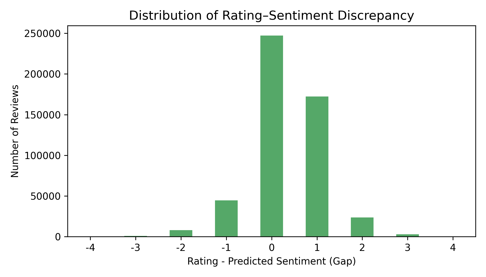
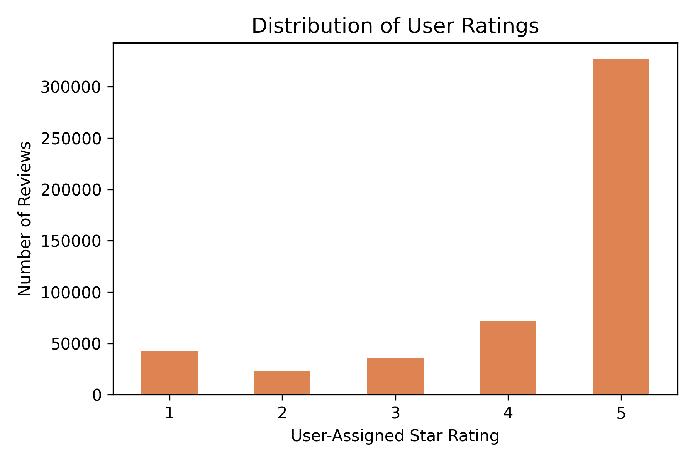
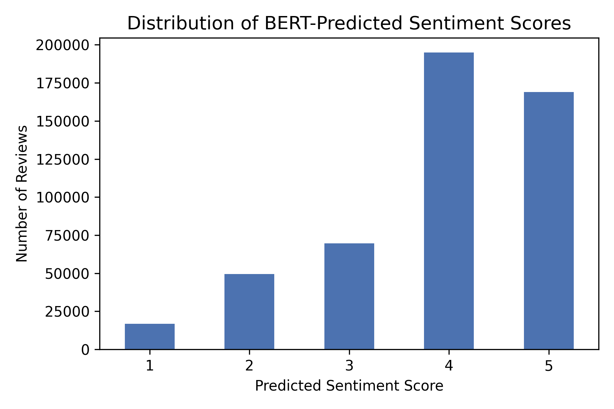
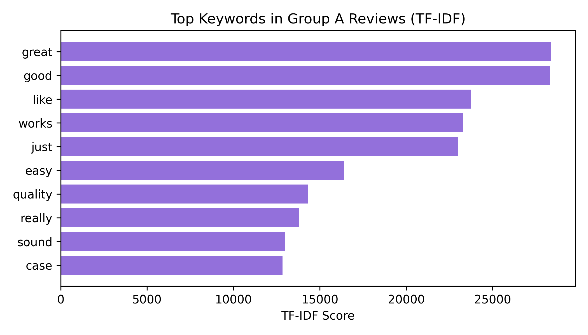
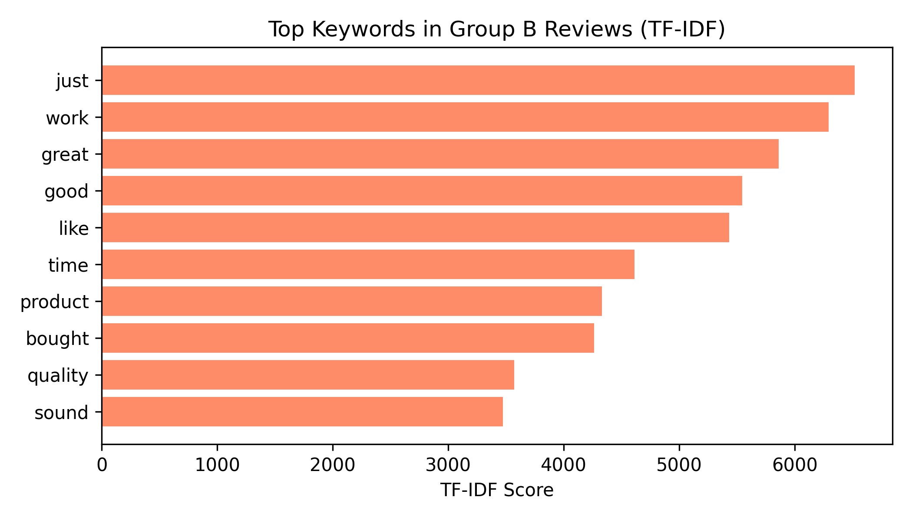
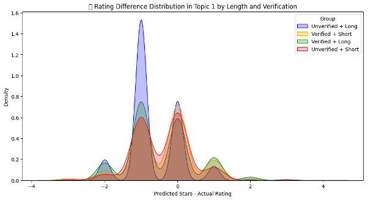
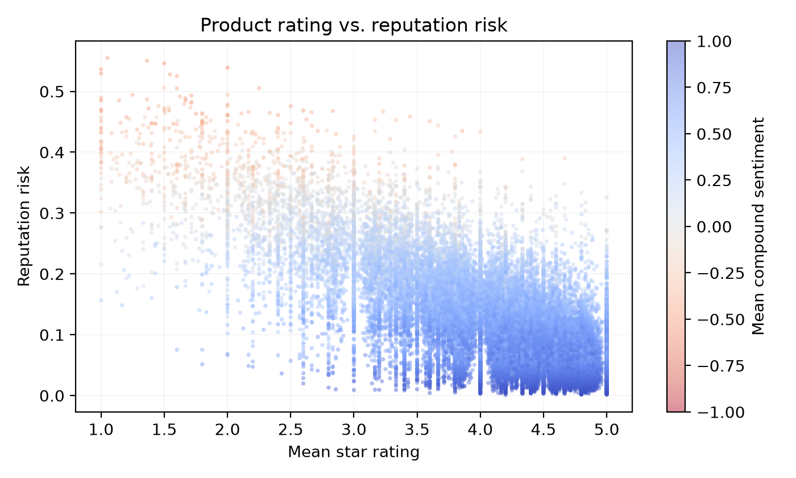
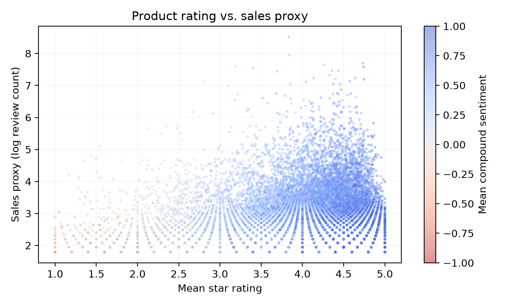

Abstract—E-commerce platforms present a star rating and a written review as two expressions of one opinion, and recommendation engines, seller rankings and trust signals are built on that assumption. We test it on 1,494,121 Amazon reviews drawn from three product categories, scoring every review body with a multilingual BERT sentiment classifier and comparing its 1–5 reading against the rating the reviewer actually assigned. The two signals disagree for 50.84% of reviews and diverge by two stars or more for 7.22%. The disagreement is strongly asymmetric: reviewers rate above the sentiment of their own text 3.5 times as often as below it, a bias that holds across all three categories. We then ask what predicts the gap. Clustering review bodies with TF-IDF and K-Means shows misalignment rising monotonically with review length, from 1.32% in the shortest cluster to 8.18% in the longest. Verified-purchase status, by contrast, accounts for 0.19 percentage points corpus-wide and is not a usable predictor. Finally we aggregate reviews to product level, define a bounded reputation risk index over complaint share and sentiment direction, and model it alongside a sales proxy with random forests over 38,272 products. A product's mean star rating proves near-uninformative about the sentiment its reviews carry, contributing 0.018 of feature importance against 0.922 for mean sentiment. The results argue that star ratings compress information the review text retains, and that length is where the residual signal lives.
Index Terms—Sentiment analysis, rating prediction, text–rating discrepancy detection, product reputation modelling, user behaviour analysis, e-commerce, natural language processing.
Online reviews are the primary evidence a shopper has about a product they cannot handle. Platforms such as Amazon collect that evidence in two forms at once: a star rating, which is quantitative and trivially aggregable, and a written review, which is qualitative and rich. Nearly every downstream system — ranking, recommendation, seller reputation, fraud screening — consumes the first and discards the second, on the implicit assumption that the rating summarises the text.
That assumption is testable, and it fails often enough to matter. Reviewers describe a late delivery, a poor fit, or a part that broke in a month, and then award four or five stars. The written complaint is real; the rating does not record it. Where this happens systematically, aggregate ratings overstate satisfaction, and any model trained on ratings inherits the distortion.
We study this gap directly. Each review in our corpus carries two readings on the same 1–5 scale — the reviewer's own rating, and a sentiment classifier's reading of the review body — and their difference is the unit of analysis throughout:
A positive gap means the stars are more generous than the text; a negative gap means the reverse. We group reviews accordingly into Group A (stars above text), Group B (stars below text) and Group C (aligned).
Three research questions organise the work:
Our contributions are as follows.
Duan, Gu and Whinston [1] established with panel data that online reviews influence sales, and — importantly for our purposes — that review volume rather than review valence carried most of the measured effect. Their result motivates treating rating averages with suspicion as summaries of opinion, and informs our decision to log-scale volume rather than let it dominate a reputation score.
Zhang et al. [4] examined which characteristics of a review matter for remanufactured product sales on Amazon, finding structural attributes such as length and helpfulness votes to be informative beyond the star value itself. This directly anticipates our RQ2 finding that length, not verification status, is where the residual signal lives.
On the modelling side, Liu et al. [3] combine BERT with a BiGRU and softmax layer for e-commerce sentiment classification, and Zhou, Zhao and Wang [5] report a lighter-weight Python pipeline for merchandise comment sentiment. Both treat the review text as the ground truth and the rating as a label to be predicted. We invert that framing: we take neither as ground truth and study their disagreement as the object of interest.
He et al. [2] detect fake-review buyers on Amazon from network structure, using purchase and reviewer graphs rather than text. Their work bounds the scope of ours. A rating–sentiment gap is not evidence of manipulation, and we make no such claim; the two lines of work address different phenomena and would need to be combined before either could speak to intent.
We use the Amazon Reviews 2023 corpus released by the McAuley Lab at UC San Diego, drawing three category files chosen to span distinct purchase types: a technical durable, an experiential fit-dependent good, and a consumable.
| Category | Reviews | Share |
|---|---|---|
| Electronics | 500,000 | 33.5% |
| Clothing, Shoes & Jewelry | 500,000 | 33.5% |
| Health & Personal Care | 494,121 | 33.1% |
| Total | 1,494,121 | 100% |
Each record retains the star rating, review title and body, a verified-purchase flag, helpful-vote count, timestamp, product identifier (ASIN), variant-group identifier, and reviewer identifier. Records with an empty body after cleaning are dropped.
The predict_stars column is not part of the released dataset; we generate it. Every review body is scored with nlptown/bert-base-multilingual-uncased-sentiment, a transformer that emits a 1–5 star label on the same scale reviewers use, which is what makes the two signals directly subtractable. Bodies are split into sentences with NLTK, scored in batches on a CUDA GPU, and averaged to one value per review, so that a long review with mixed content is not dominated by its first clause. This is the only computationally expensive step in the project; everything downstream runs on a laptop.
Two cleaning paths are used deliberately. Lexicon scoring with VADER (§5.3) receives text with punctuation, capitalisation and emoji intact, because VADER derives intensity from exactly those features. Bag-of-words models — TF-IDF, LDA and K-Means — receive lowercased, punctuation-stripped text, which is all they can consume. Abbreviation expansion is anchored to word boundaries so that frequent clothing terms are not corrupted by substring matches.
We treat predict_stars as a model output rather than a label, and this qualification carries through the whole study. A general-purpose sentiment classifier applied to out-of-domain text is routinely a star away from a human judgement, so a threshold of |gap| ≥ 2 selects cases worth examining rather than proving that a reviewer was careless or dishonest. Where we report a misalignment rate we are reporting a disagreement between a reviewer and a model, and the split between reviewer behaviour and classifier error is not resolved by this data. Establishing it would require a hand-labelled sample; we identify this as the principal open item in §8.
For each review we compute rating_gap and assign it to Group A, B or C by sign. We then characterise the two misaligned groups by content, applying Latent Dirichlet Allocation and BERTopic to their review bodies and extracting the highest-weighted TF-IDF terms per group. LDA supplies word–topic distributions; BERTopic supplies embedding-based clusters that are more sensitive to context. Together they answer what each direction of mismatch is actually about, as opposed to how large it is.
Review bodies are vectorised with TF-IDF restricted to the 1,000 most informative terms, with English stop words removed and terms appearing in more than 95% or fewer than 10 documents discarded. K-Means with k = 5 then partitions the corpus into semantic clusters, and each cluster is profiled for misalignment rate, mean gap, mean review length and verified-purchase share.
Because K-Means numbers its clusters arbitrarily, the cluster of interest is selected by widest mean gap rather than by index, so the analysis is stable across refits. Within that cluster we cross review length — long at 50 words or more, short below — against verification status, producing four groups, and compare misalignment rates between them. The same verification comparison is then repeated over the entire corpus, which is the test the cluster-level result must survive.
Reviews are scored with VADER to obtain a continuous compound sentiment in [−1, 1], then aggregated by ASIN. Products with fewer than five reviews are excluded: a product with two reviews carries no reliable signal and should not enter a regression beside one with four hundred.
We define reputation risk for a product as
where nneg/n is the share of reviews with negative compound sentiment, s is mean compound sentiment mapped from [−1, 1] onto [1, 0], and w is a log-scaled exposure term normalised by the busiest product in the corpus. The construction has three properties we require. Risk increases with complaint share. The direction of sentiment drives the score rather than its magnitude, so two products with identical complaint counts but opposite overall tone are separated. And volume breaks ties without overwhelming severity: five hundred angry reviews signal more damage than five, but a busy well-liked product still ranks below a quiet troubled one. Scores are bounded in [0, 1].
Following [1], we use log review count as a sales proxy, since unit sales are not published. We fit random forest regressors (100 trees, 80:20 split) for both targets over mean rating, mean sentiment, review length, helpful votes, verified-purchase share and a time-decay weight. We report the correlation between the two targets alongside the models: both draw on review volume, and they are not independent outcomes.
Ratings and text sentiment agree exactly for 49.16% of reviews. The remaining half disagree, and the disagreement does not balance.

| Gap | Reviews | Share | Group |
|---|---|---|---|
| −4 | 336 | 0.02% | B |
| −3 | 3,308 | 0.22% | B |
| −2 | 24,580 | 1.65% | B |
| −1 | 140,552 | 9.41% | B |
| 0 | 734,560 | 49.16% | C |
| +1 | 511,161 | 34.21% | A |
| +2 | 69,734 | 4.67% | A |
| +3 | 8,727 | 0.58% | A |
| +4 | 1,163 | 0.08% | A |
Group A holds 590,785 reviews (39.54%) against Group B's 168,776 (11.30%) — a ratio of 3.5 to 1. Restricted to reviews that disagree at all, 77.8% have the stars running ahead of the text. Mean rating_gap across the corpus is +0.3216 stars.
Severe misalignment, defined as a gap of two stars or more in either direction, affects 107,848 reviews or 7.22% of the corpus.
The underlying distributions explain the asymmetry. Reviewers assign five stars to 63.5% of the products they review; the classifier reads only 32.5% of the corresponding texts as five-star sentiment, placing most of its mass at four. The rating scale is compressed at its top end in a way the text is not.


The effect is stable across categories, which argues against a category-specific explanation.
| Category | Reviews | Severe | Mean gap |
|---|---|---|---|
| Electronics | 500,000 | 7.16% | +0.332 |
| Clothing, Shoes & Jewelry | 500,000 | 6.22% | +0.359 |
| Health & Personal Care | 494,121 | 8.29% | +0.273 |
Keyword extraction over the two misaligned groups shows what each direction looks like in practice. Group A reviews foreground functional vocabulary — works, easy, sound, quality — describing a product that performs while the surrounding tone stays measured. Group B reviews cluster on situational terms — time, bought, just — suggesting dissatisfaction with circumstances of the purchase rather than the product itself.


Clustering the Clothing, Shoes and Jewelry category (483,948 reviews after filtering, k = 5) produces five groups whose misalignment rates differ by a factor of six. Ordering them by mean review length orders them by misalignment rate as well, without exception.
| Cluster | n | Words | Misaligned | Verified |
|---|---|---|---|---|
| 1 | 29,091 | 10.7 | 1.32% | 95.9% |
| 0 | 51,725 | 28.4 | 2.28% | 86.7% |
| 4 | 44,824 | 31.1 | 2.51% | 87.7% |
| 2 | 42,755 | 34.1 | 4.25% | 80.5% |
| 3 | 315,553 | 60.6 | 8.18% | 74.5% |
The shortest cluster is dominated by terse endorsements — stars, great, love — averaging under eleven words, and misaligns 1.32% of the time. The longest averages sixty words on fit and sizing and misaligns 8.18% of the time. A reviewer who writes at length has room to voice reservations that a single click cannot express; a reviewer who writes ten words has already committed to a verdict.
Within the widest-gap cluster, crossing length against verification status puts long reviews ahead of short ones in both verification states.
| Group | Misaligned | n |
|---|---|---|
| Long + Verified | 6.94% | 3,921 |
| Long + Unverified | 5.66% | 5,353 |
| Short + Verified | 3.85% | 30,499 |
| Short + Unverified | 2.28% | 2,982 |
Length roughly doubles the rate within each verification state. Verification moves it by about a point, and — contrary to the intuition that unverified purchases drive rating inflation — moves it in the direction of verified reviews misaligning more.
That cluster-level ordering does not by itself license a claim about verification, since a cluster's aggregate verification share says nothing about which reviews inside it are misaligned. We therefore repeat the comparison over the full corpus, where the effect all but vanishes.
| Misaligned | n | |
|---|---|---|
| Verified purchase | 7.19% | 1,286,994 |
| Unverified | 7.38% | 207,127 |
| Difference | 0.19pp | — |
Across 1.49M reviews, verification separates the corpus by 0.19 percentage points. It is not a usable predictor of misalignment, and the apparent cluster-level signal is a consequence of verification correlating with length rather than an effect in its own right.

Aggregating the full corpus to product level and applying the five-review floor yields 38,272 products. Random forests fit over the six product-level features give the results in Table 7.
| Target | R² | RMSE |
|---|---|---|
| Sales proxy (log review count) | 0.710 | 0.397 |
| Reputation risk | 0.924 | 0.022 |
The two models are driven by almost disjoint feature sets, which is the more interesting result.
| Feature | Sales | Reputation |
|---|---|---|
| Verified-purchase share | 0.572 | 0.007 |
| Helpful votes | 0.132 | 0.011 |
| Mean rating | 0.104 | 0.018 |
| Mean sentiment | 0.066 | 0.922 |
| Review length | 0.064 | 0.026 |
| Time weight | 0.063 | 0.016 |
The reputation model's R² of 0.924 must be read with its construction in mind. Mean sentiment is an input to the risk index, and the forest recovers it with an importance of 0.922; the model is substantially rediscovering its own definition, and the figure measures internal consistency rather than predictive power. The result worth reporting is the negative space around it — mean rating contributes 0.018 and verified-purchase share 0.007. A product's star average is close to uninformative about the sentiment its reviews actually carry. This is RQ1's asymmetry reappearing at product level: ratings compress, text does not.
The sales model carries no such circularity, and its leading feature is unexpected. Verified-purchase share alone accounts for 0.572 of the importance in predicting review volume — far ahead of helpful votes (0.132) and mean rating (0.104). Products whose reviews come predominantly from confirmed purchasers accumulate more reviews. Since review count is our sales proxy, the natural reading is that verification share tracks genuine transaction volume, which is what the proxy is standing in for. Note the contrast with RQ2: verification carries real information about a product while carrying almost none about whether an individual review is misaligned.
The two targets correlate at only +0.159, so despite both drawing on review volume they behave largely independently, and the disjoint importance profiles in Table 8 are not an artefact of a shared target.
Ranking products by risk gives face-valid results: the ten highest-risk products carry mean ratings between 1.0 and 2.25 stars with mean compound sentiment between −0.27 and −0.56, and they span review counts from five to 111, confirming that the exposure term breaks ties without letting popularity override severity.


The proxy is unvalidated. Every misalignment figure in this paper measures disagreement between a reviewer and a classifier whose accuracy on this corpus we have not established. A two-star threshold sits near the error band of a general-purpose sentiment model, so some fraction of what we count as misalignment is model error. This does not affect the comparative results — length ordering, category stability, the verification null — because model error should not vary systematically with those factors, but it does mean absolute rates should be read as upper bounds.
The reputation model is partly circular. Mean sentiment is an input to the risk index, so its R² of 0.924 measures internal consistency, not predictive skill. We report it for the feature ranking it produces — chiefly that mean rating is near-uninformative — rather than as evidence the index can be forecast from independent signals.
Sales are proxied, not observed. Review count is a popularity signal standing in for unit sales, which Amazon does not publish. It also feeds the exposure term of the reputation index; the measured correlation between the two targets is +0.159, low enough that they behave largely independently, but they are not fully separate constructs.
Cluster count is unjustified. k = 5 follows prior practice in this setting rather than an elbow or silhouette analysis. The monotone length ordering in Table 4 is suggestive precisely because it does not depend on where the cluster boundaries fall, but the specific rates do.
Coverage. Three categories from one platform in one language. The consistency of the asymmetry across categories (Table 3) is evidence for generality but not proof of it.
Buyun Wang — related work, RQ1 methodology, RQ1 experiments and results.
Mingyang Xie — introduction, part of the dataset section, data processing for RQ1 and RQ2.
Lixing Yang — project lead; RQ2 methodology, experiments and results; conclusions; part of the dataset section.
Siyuan Qiu — RQ3 methodology, experiments and results; part of the dataset section.
Code, figures, pipeline output and this report are available at github.com/branbot6/amazon-review-sentiment-misalignment. The repository ships the three analysis pipelines behind a single configurable data root, unit tests that run without the dataset, and the checked-in output of the corpus statistics run reported in §5.1. The corpus itself is not redistributed; the repository documents its source and the procedure for regenerating predict_stars.
We set out to test whether a star rating faithfully summarises the review written beside it. Over 1,494,121 Amazon reviews it does so for roughly half, and where it fails it fails in a consistent direction: reviewers rate above the sentiment of their own text 3.5 times as often as below it, with a mean gap of +0.32 stars that holds across three unrelated product categories. The rating scale is compressed at its top end in a way the text is not, and aggregate ratings therefore overstate satisfaction by a measurable margin.
Asking what predicts the gap produced a clearer answer than we expected, and not the one we anticipated. Review length orders cluster-level misalignment monotonically, from 1.32% among ten-word endorsements to 8.18% among sixty-word accounts of fit and sizing. Verified-purchase status — the intuitive candidate, and the one a platform can act on most easily — separates the corpus by 0.19 percentage points and carries no usable signal. What appears at cluster level as a verification effect is length asserting itself through a correlated variable. The practical implication is that a platform looking for reviews whose text carries information the rating omits should read the long ones, irrespective of purchase verification.
At product level, across 38,272 products, the same compression appears again. A product's mean star rating contributes 0.018 of feature importance in explaining the sentiment its reviews actually carry, against 0.922 for mean sentiment itself: the star average is close to uninformative about the tone of the text beneath it. Verified-purchase share, meanwhile, dominates the sales proxy at 0.572 while contributing 0.007 to reputation — informative about a product, uninformative about whether any given review is misaligned. The two findings are consistent, and both point the same way. Aggregate ratings are a lossy summary, and the loss is systematic rather than noisy.
Four directions follow directly. Validating the proxy is the most important: a hand-labelled stratified sample of several hundred reviews would let the misalignment rate be decomposed into reviewer behaviour and classifier error, which this data cannot separate and which conditions every absolute number we report. Modelling the gap directly — as a regression target over review features rather than a threshold — would use the full distribution in Table 2 instead of discarding it at a cut point. Longitudinal analysis of sentiment trajectories per product would test whether misalignment accumulates or corrects as a product ages, which our cross-sectional design cannot address. And extending across platforms and languages would establish whether the positivity bias is a property of reviewers or of Amazon's particular interface, a question the consistency across our three categories raises but cannot settle.